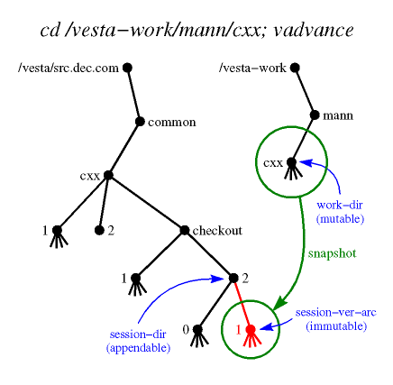

vadvance - Advance to the next version within a Vesta checkout session
vadvance [-t] [-q] [-Q] [-f] [-v] [-F fp-content] [-j junk | -J] [-z maxsize | -Z] [-s session-dir] [-a session-ver-arc] [-R repos] [[-w] work-dir]
In the most common usage, vadvance is invoked from the checkout session's working directory, and no arguments are needed.
See the vesta-intro man page's Terminology section for definitions of terms, and its Name Interpretation section for an explanation of how names are looked up.
The vadvance command cleans up and snapshots the contents of a working directory to form the next version in a Vesta checkout session.
In more detail: vadvance's cleanup phase walks the directory tree rooted at work-dir. If the last arc of any file's name matches one of the patterns in junk, the file is deleted. Here junk is a space-separated list of glob(3) patterns. If a file added since the last advance is larger than maxsize, vadvance exits with an error message upon encountering it. Next, by default, vadvance checks whether anything under work-dir has changed since the last advance; if not, it exits with an informational message. Finally, vadvance's snapshot phase binds session-dir/session-ver-arc to a new immutable directory that is a copy of the mutable directory work-dir, and then sets the session-ver-arc attribute of work-dir to session-ver-arc.

You must have read and write access to work-dir and write access to session-dir. The newly created snapshot is owned by you, but has access permissions inherited from session-dir.
Without the -t flag, vadvance returns status 0 if the advance was successful or if no advance was performed because nothing changed, 1 for parameter syntax errors, or 2 for more serious errors. See the description of -t below for how it affects the exit status. (Note that if any of the trigger commands fail, vadvance returns status 2.)
If work-dir has been renamed, vadvance will silently re-connect it to session-dir and any version reservation. (To be specific, it checks whether work-dir matches the "work-dir" attribute on session-dir and the version reservation pointed to by the "new-version" attribute of work-dir, if any. If they don't match, it corrects those "work-dir" attributes.) So if you rename a work-dir, just run vadvance on it to update the "work-dir" attributes which link to it from these other objects. With either the -t or -Q flag, it will not correct the "work-dir" attributes.
- -q
- Quiet; suppress printing out what is being done.
- -Q
- Query; print out what the command would do, but don't do it. (Note that this disables running any triggers you have configured.)
- -t
- Test; exit with 0 status only if no advance would be performed because nothing changed. Exit with 255 if the working directory has been modified. Implies -Q.
- -w work-dir
- The mutable working directory to snapshot to produce the new version. If you place this option last on the command line, you can omit the -w. If the name work-dir is unqualified (does not have "/", ".", or ".." as its first arc), it is interpreted relative to DefaultWorkParent/user, where user is your local user name. Defaults to the current directory, or if -s is not used and the current directory has no session-dir attribute, the nearest parent directory with a non-empty session-dir attribute.
- -s session-dir
- The session directory that will hold the new version. If the name session-dir is unqualified, it is interpreted relative to the site's default directory of packages, DefaultPackageParent. Defaults to the session-dir attribute of work-dir, if any.
- -a session-ver-arc
- The new version in the session directory. Must be a single arc (i.e., must contain no "/" characters). Defaults to the highest version number bound in session-dir plus 1. That is, session-dir is searched for arcs consisting entirely of decimal digits, the one with the highest value is chosen, and it is incremented by 1 to obtain the default. If no such arcs are found, the default is set to 1.
- -f
- Force; omit sanity checking. If the -f flag is not given:
- The directory session-dir must be of type "session". (That is, its type attribute must include this value.)
- Some file or directory in the tree rooted at the working directory must have changed since the last vadvance.
- -F fp-content
- Any new or modified files in the directory that are strictly less than fp-content bytes long are fingerprinted deterministically according to their contents. Longer files are fingerprinted with arbitrary unique identifiers. The cost of fingerprinting a file's contents is non-trivial, but doing so allows for cache hits in cases where two evaluations depend on files that have identical contents but were inserted into the repository separately. The default value for this parameter is determined by the Vesta configuration file; see below. The special value -1 causes all files to be fingerprinted by contents, while 0 causes all files to be fingerprinted by unique identifier.
- -j junk
- A space-separated list of glob(3) patterns used to delete unwanted files from the working directory tree before advancing. If the last arc of a file's name matches one of the patterns in junk, and the file was created or modified since the last advance, the file is deleted. The default value is obtained from the Vesta configuration file; see below.
- -J
- Clears the junk pattern list; equivalent to -j "".
- -z maxsize
- Size of the largest new file that vadvance will advance into the repository, in bytes. maxsize can be specified with a unit multiplier:
If a file larger than maxsize was created or modified since the last advance, the new advance will fail with an error message. The default value is obtained from the Vesta configuration file; see below.
- K = 2^10
- M = 2^20
- G = 2^30
- T = 2^40
- -Z
- Disables the file size limit; equivalent to -z -1.
- -R repos
- Advance the package in repos instead of the default local repository. The repository is specified by host name and TCP port number in the format host:port. The :port portion may be omitted; it defaults to [Repository]VestaSourceSRPC_port.
- -v
- Displays extra information about triggers. Before executing any trigger commands, the environment variables used to provide information to them are printed. Also, each trigger setting is printed before the command is executed. This can be used to help debug trigger problems. When used with the query flag (-Q), the triggers are displayed in their sorted order without actually running them.
The following values are obtained from the [UserInterface] section of the Vesta configuration file (vesta.cfg).
- AppendableRootName
- The filename under which the global root directory of Vesta repositories is mounted. Ordinarily set to /vesta.
- MutableRootName
- The filename under which the local tree of mutable directories provided by Vesta is mounted. Ordinarily set to /vesta-work.
- DefaultPackageParent
- The default directory to put new packages in. Ordinarily a subdirectory of the appendable root, named with an Internet domain name belonging to the local site.
- DefaultWorkParent
- The default parent directory for mutable working directory trees belonging to individual users. Ordinarily the same as the mutable root.
- realm
- Global user names are formed by appending @realm to the local name.
- TimeFormat
- A format string for strftime(3) to produce time strings for Vesta attributes. A common setting is "%a %b %e %T %Z %Y".
- FpContent
- The default value for the -F flag.
- vadvance_junk
- The default value for the -j flag. If not set, the default is "*~ .*~ core".
- vadvance_maxsize
- The default value for the -z flag. If not set, the default is 1048576 (1 megabyte).
The following values are obtained from the [Repository] section of the Vesta configuration file.
- VestaSourceSRPC_host
- The host name of the default (local) repository.
- VestaSourceSRPC_port
- The default TCP port number for repositories.
Settings in the [vadvance pre trigger] and [vadvance post trigger] sections of the configuration file are used as commands to be run before and after the repository is modified. See the next section.
Users can configure commands in the Vesta configuration file (vesta.cfg) to be executed before and after vadvance modifies the repository. Each setting in the [vadvance pre trigger] section specifies a command to be run before any action is taken, and each setting in the [vadvance post trigger] section specifies a command to be run after all actions are complete.
The value of each setting specifies a command to run. The names of the settings define the order in which these commands are run. The setting names are sorted as strings, but comparing embedded sequences of digits as decimal integers. (So, for example "foo_10_bar" will sort after "foo_2_bar".) The suggested naming convention for trigger settings is to start with an integer, follow with a descriptive name, and follow that with any other text. (This is based on the convention used for System V style init script links typically stored in /etc/rcN.d.)
Here's a simple example of how we suggest naming trigger settings, and how they are ordered for execution:
[vadvance pre trigger] 100world = echo World! 9tada = echo Tada: 50hello = echo Hello,Because these all start with numbers, they will be executed in the order "9tada", "50hello", "100world". The output will look like this:% vadvance Tada: Hello, World! Advancing to /vesta/...Trigger commands are executed with system(3). On most operating systems this means "/bin/sh -c command", so simple in-line shell scripts can be used. (Note that each is executed in its own shell process, so environment variables set during one trigger command will not propagate to subsequent ones.)If any of the commands in the [vadvance pre trigger] section exit with error (non-zero) status or are terminated by a signal (e.g. segmentation fault, abort), vadvance will exit without taking a new snapshot or deleting junk files from the working directory.
The commands in the [vadvance post trigger] section will only be executed if a new snapshot is taken. If the working directory hasn't been modified since the last snapshot or vadvance fails with an error, the commands in the [vadvance post trigger] section will not be executed.
Note that all the trigger commands (both pre and post) are executed sequentially. Once a trigger command is started, nothing else happens until it completes. If any of the pre trigger commands runs forever, vadvance will not take a new snapshot. If any of the post trigger commands runs forever, vadvance will not complete. (In other words, a trigger command that hangs will cause vadvance to hang.) If any of the pre or post trigger commands exit with error status or are terminated by a signal, vadvance will exit without running any more commands from those sections. (In other words, a trigger command that fails will prevent further trigger commands from being run.)
If the the query flag (-Q) is given (or the test flag (-t), which implies query), the trigger commands will not actually be run.
Information about what vadvance is going to do or has just done is provided to the trigger commands through the following environment variables:
- VESTA_TOOL
- The name of the Vesta tool the trigger command has been invoked from. (For vadvance, this will always be "vadvance".)
- VESTA_REPOS
- The repository (host:port) vadvance communicates with (either the default from the configuration file or the one specified with the -R flag.
- VESTA_WORK_DIR
- The working directory of which a new snapshot is taken.
- VESTA_SESSION_DIR
- The session directory within which the new snapshot version is created.
- VESTA_SESSION_VER_ARC
- The name of the new snapshot version created by vadvance inside the session directory.
- VESTA_SESSION_VER
- The full path of the new snapshot version created by vadvance. (This is the same as "$VESTA_SESSION_DIR/$VESTA_SESSION_VER_ARC".)
- VESTA_PREV_SESSION_VER_ARC
- The name of the highest version existing in the session directory when vadvance started.
- VESTA_PREV_SESSION_VER
- The full path of the highest version existing in the session directory when vadvance started. (This is the same as "$VESTA_SESSION_DIR/$VESTA_PREV_SESSION_VER_ARC".)
- VESTA_JUNK
- The pattern of "junk files" removed before taking the snapshot. Set to the empty string if removal of junk files is disabled with the -J flag.
- VESTA_MAXSIZE
- The maximum size of file allowed in the snapshot.
- VESTA_FP_CONTENT
- The maximum size of file deterministically fingerprinted by content. (If set to -1, then all files will be fingerprinted by content, regardless of size.)
- VESTA_QUIET
- Set to 1 if the quiet flag (-q) was given, set to 0 otherwise.
- VESTA_FORCE
- Set to 1 if the force flag (-f) was given, set to 0 otherwise.
(Note that the environment variables are the same for both the pre and post trigger commands.)
Here are some examples using these environment variables:
[vadvance pre trigger] 50print_change = diff -r -u $VESTA_SESSION_VER $VESTA_WORK_DIR | more [vadvance post trigger] 50stamp_wd = vattrib -R $VESTA_REPOS_HOST:$VESTA_REPOS_PORT -s "last-advanced-at" "`date`" $VESTA_WORK_DIRIf the verbose trigger flag (-v) is given, these environment variables will be printed, and each trigger command will be printed before executing it. This can be useful for debugging trigger problems. If both verbose trigger flag and the the query flag (-Q) are given, the triggers are displayed in their sorted order without actually running them. This can be used to find out what trigger commands are configured without actually running them.
This page was generated automatically by mtex software.